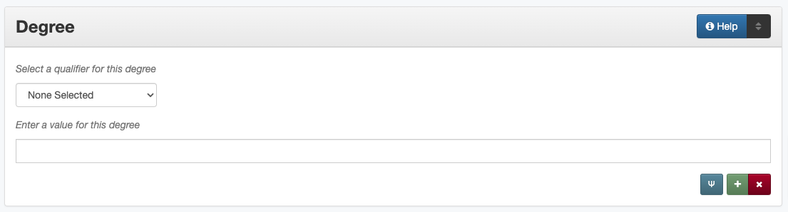

Degree
Definition
Information about theses/dissertations and other items created at the University of North Texas.
Where Can the Degree Information be Found?
Degree information can come from the following parts of a thesis or dissertation:
the title page
an abstract page
Or from the following parts of a College of Music recital:
a recital program
the front/back cover of a CD case
the top of a CD
For other items, this information may be found on (or inferred from) the item or accompanying information.
How Degree Works in the Metadata Form
Parts:
Degree qualifier – drop-down menu
Degree information – text field
- Repeatable?
Yes - to include multiple kinds of degree information (up to six) click ‘Add’ to repeat all field parts; “department” can be repeated as necessary, but other information types (level, discipline, grantor, etc.) cannot be used more than once
- Required?
No (more information)
How Should the Degree be Filled in?
General Degree Rules
This section is only used for:
theses and dissertations
degree recitals in the UNT College of Music
other output from the UNT community
For each document, include all relevant parts
Degree Name
Guideline |
Examples |
|---|---|
|
Master of Music |
Degree Level
Guideline |
Examples |
|---|---|
|
Doctoral
Master’s
|
|
Bachelor’s |
Degree Publication Type
Guideline |
Examples |
|---|---|
|
Doctoral Dissertation
Master’s Thesis
Problem in Lieu of a Master’s Thesis
|
Degree Discipline
Guideline |
Examples |
|---|---|
|
Elementary Education |
Academic Department
This subfield may be used for any items created at the University of North Texas
For theses and dissertations, this should be the same as the department chair listed on the title page
For items other than theses and dissertations, use the current department associated with the creator(s)
The department will not be changed retroactively if the creator moves to a different department
Guideline |
Examples |
|---|---|
|
Political Science |
|
Library and Information Science
Digital Projects
|
Degree Grantor
Guideline |
Examples |
|---|---|
|
University of North Texas |
Other Examples:
- Doctorate in Physics
Name: Doctor of Philosophy
Level: Doctoral
Publication Type: Doctoral Dissertation
Discipline: Physics
Department: Physics
Grantor: University of North Texas
- Master’s in Visual Arts
Name: Master of Arts
Level: Master’s
Publication Type: Problem in Lieu of a Master’s Thesis
Discipline: Sculpture
Department: School of Visual Arts
Grantor: University of North Texas
- Master’s in Political Science
Name: Master of Science
Level: Master’s
Publication Type: Master’s Thesis
Discipline: Political Science
Department: Political Science
Grantor: University of North Texas
- Doctorate in Literature
Name: Doctor of Philosophy
Level: Doctoral
Publication Type: Doctoral Dissertation
Discipline: English
Department: English
Grantor: North Texas State University
- Artist Certificate
Name: Graduate Artist Certificate
Level: Certificate
Discipline: Flute
Department: Music
Grantor: University of North Texas
Resources
UNT Degree Level Controlled Vocabulary
UNT Degree Publication Type Controlled Vocabulary
More Guidelines:
Comments
If feasible, compiling controlled vocabularies for degree name and discipline facilitate consistency.
In some cases, Academic Department will also be related to the Institution element.